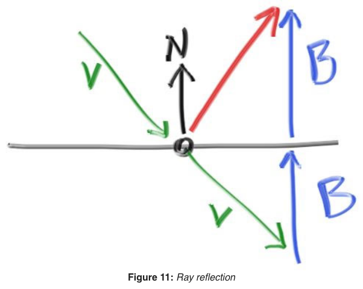
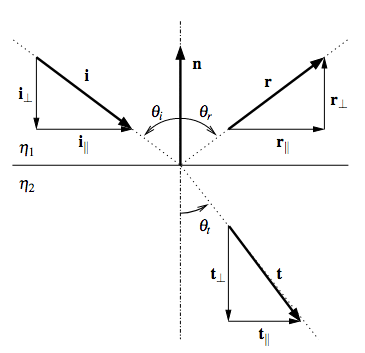

Table of Contents
While working through Peter Shirley's "Raytracing in One Weekend" I had trouble justifying the handwaved expression for a refracted ray and had to derive it for myself
Overview
Computer graphics uses geometrical optics as its light propogation model.
Geometrical optics, or ray optics, is a model of optics that describes light propagation in terms of rays – from Wikipedia
rays:
- Propagate in straight-line paths as they travel in a homogeneous medium.
- Bend, and in particular circumstances may split in two, at the interface between two dissimilar media.
- Follow curved paths in a medium in which the refractive index changes.
- May be absorbed or reflected.
This is the model used because it cheaply and understandbly accounts for most phenonmena. (This will fail to account for diffraction and interference properties of light (wave properties) – for example: thin film light interference in soap bubbles, light bending around a small aperture like a closed door etc)
The raytacing implementation (Whitted) is based on recursively shooting more rays from each ray-object intersection point up to some recursion limit. Note that ray tracing, if it is limited to just the recursive algorithm, is not necessarily realistic as it does not satisfy the rendering equation (the bundled underlying physics, conservation laws).
Using the ray model forces us to account for refraction and reflection (Fresnel equations, total internal reflection, and Beer’s Law as well…)
Reflection
I think Shirley's derivation is good with just some small (probably obvious depending on your trust and intuition of the dot product) details ommited and his drawing works well too:

Figure 1: \(\hat n\) , the normal, and \(\vec v\), the incident ray, from [https://raytracing.github.io/books/RayTracingInOneWeekend.html#metal/mirroredlightreflection][Peter Shirley - Raytracing in One Weekend:: Section 9.4]]
The dot product for the two vectors is by definition:
\[ \vec v \cdot \hat n = \lvert \lvert \vec v \rvert \rvert \lvert \lvert \hat n \rvert \rvert \cos {\theta} \]
Where \(\theta\) is the angle between each vector, tail to tail.
Since the length of a unit vector is \(1\), \(\lvert \lvert \hat n \rvert \rvert = 1\) \[ \vec v \cdot \hat n = \lvert \lvert \vec v \rvert \rvert \cos {\theta} \]
If you're comfortable with the dot product as a projection operator, then clearly the magnitude \(B\) is just \(\vec v \cdot \hat n\). If you're distrustful due to the obtuse angle between them, reverse the direction of the incident ray \(= -\vec v\), now the \(\lvert \lvert \vec v \rvert \rvert \cos {\theta}\) is clearly just the trigonometric leg along the normal.
<!– Alternatively, you could use the obtuse angle and use the fact that sine and cosine are equal after a half pi phase shift , \(\sin \left( {x + \frac{\pi}{2}} \right)= \cos x\).<br> Trigonometrically, \(B\) is just the opposite leg of the angle \(\phi\) s.t. \(\phi = \theta - \frac{\pi}{2}\), \(B = \lvert \lvert \vec v \rvert \rvert \sin \phi = \lvert \lvert \vec v \rvert \rvert \cos \left( \phi - \frac{\pi}{2} \right)\) –>
<!– \[\vec v \cdot \hat n = \lvert \lvert \vec v \rvert \rvert \cos {\theta}\] –>
<!– Since the incident ray and the normal are obtuse to each other, the magnitude \({\lvert \lvert \vec B \rvert \rvert}\) must equal \(-\vec v \cdot \hat n\)<br> –>
Finding the reflected vector is now just a matter of using vector addition:
\[\vec v + 2\vec B = {\vec v}_{refl}\] \[{\vec v}_{refl} = \vec v - 2\left(\vec v \cdot \hat n \right)\]
Another good, alternative derivation for the reflected vector, in this case for specular lighting in rasterization can be found [here](http://learnwebgl.brown37.net/09_lights/lights_specular.html)
Refraction

Figure 2: Diagram from Bram De Greve
Available tools in the toolkit: Snell's law, vector math, trigonometry
- [Snell's law](snell's law link), see derivation [here](mylink):
\[{\eta}_1 \sin {\theta}_i = {\eta}_2 \sin {\theta}_t\]
- Vector expression for the incident and refracted rays:
\[ \vec i = {\vec i }_{||} + {\vec i}_{⊥}\] \[ \vec t = {\vec t }_{||} + {\vec t}_{⊥}\]
- Expression for the sine of the incident and refracted angles:
\[\sin {\theta}_i = \frac {\lvert \lvert {\vec i }_{||} \rvert \rvert}{\lvert \lvert \vec i \rvert \rvert}\] \[\sin {\theta}_t = \frac {\lvert \lvert {\vec t }_{||} \rvert \rvert}{\lvert \lvert \vec t \rvert \rvert}\]
- Euclidean metric (pythagorean theorem)
\[{\lvert \lvert \vec i \rvert \rvert}^2 = {\lvert \lvert {\vec i }_{||} \rvert \rvert}^2 + {\lvert \lvert {\vec i }_{⊥} \rvert \rvert}^2\] \[{\lvert \lvert \vec t \rvert \rvert}^2 = {\lvert \lvert {\vec t }_{||} \rvert \rvert}^2 + {\lvert \lvert {\vec t }_{⊥} \rvert \rvert}^2\]
Solving for its components:
By 3: \[\lvert \lvert {\vec t }_{||} \rvert \rvert = \lvert \lvert \vec t \rvert \rvert \sin {\theta}_t \]
By 1: \[\lvert \lvert {\vec t }_{||} \rvert \rvert = \lvert \lvert \vec t \rvert \rvert \frac{{\eta}_1}{{\eta}_2} \sin {\theta}_i\]
By 3. \[= \lvert \lvert \vec t \rvert \rvert \frac{{\eta}_1}{{\eta}_2} \frac {\lvert \lvert {\vec i }_{||} \rvert \rvert}{\lvert \lvert \vec i \rvert \rvert}\] \[= \frac{\lvert \lvert \vec t \rvert \rvert}{\lvert \lvert \vec i \rvert \rvert} \frac{{\eta}_1}{{\eta}_2} \lvert \lvert {\vec i }_{||} \rvert \rvert \]
Note:<br> Even if the ray isn't normalized, for the simplfified geometric/ ray model, the incident and refracted ray are the same ray, despite a change in orientation, and must accordingly have the same length.
This is obviously true for the reflected case, but I see no reason why this would be different for the refracted case. (This was a small conceptual barrier for me as Shirley's raytracer does not normalize it's rays – "Note that I do not make the ray direction a unit length vector because I think not doing that makes for simpler and slightly faster code." and de Greve's does but they both yield the same expression)
\[\implies \frac{\lvert \lvert \vec t \rvert \rvert}{\lvert \lvert \vec i \rvert \rvert} = 1\] \[\lvert \lvert {\vec t }_{||} \rvert \rvert = \frac{{\eta}_1}{{\eta}_2} \lvert \lvert {\vec i }_{||} \rvert \rvert \]
Since the parallel part of both the incident and refracted ray point in the same direction this expression is true in vector form as well.
\[{\vec t }_{||} = \frac{{\eta}_1}{{\eta}_2} {\vec i }_{||}\]
By 2:
\[{\vec t }_{||} = \frac{{\eta}_1}{{\eta}_2} \left( \vec i - {\vec i}_{⊥} \right)\]
We already know about the incident ray in our raytracer and the perpendicular component can be expressed by the dot product using the same reasoning from the reflection derivation:
\[{\vec i}_{⊥} = -\vec i \cdot \hat n = -\lvert \lvert \vec i \rvert \rvert \cos {\theta}_{i} \hat n \]
\[{\vec t }_{||} = \frac{{\eta}_1}{{\eta}_2} \left( \vec i + \lvert \lvert \vec i \rvert \rvert \cos {\theta}_{i} \hat n \right)\]
The parallel component gives us the perpendicular one directly from the pythagorean theorem.
By 4: \[{\lvert \lvert {\vec t }_{⊥} \rvert \rvert} = \sqrt{{\lvert \lvert \vec t \rvert \rvert}^2 - {\lvert \lvert {\vec t }_{||} \rvert \rvert}^2}\] \(\implies\) \[{\vec t }_{⊥} = -\sqrt{{\lvert \lvert \vec t \rvert \rvert}^2 - {\lvert \lvert {\vec t }_{||} \rvert \rvert}^2} \hat n\]
With both components expressed, it's again just a matter of vector addition for the resultant refracted vector.
While both component's expressions differ from Shirley's, they do so exactly by the non-normalized incident and refracted vector lengths and reduce to Shirley's expressions respectively if normalized. (It would seem that Shirley accidentally used the normalized expressions commonly found in the literature… I'm still very thankful for his free and very well written resource despite the small amount of hair pulling this induced)